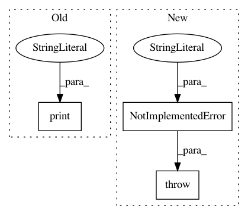

8b9d5d8f72f8470759d0920915b6547042686066,GPy/kern/src/integral.py,Integral,update_gradients_full,#Integral#,32
Before Change
//print "V%0.5f" % self.variances.gradient
//print "L%0.5f" % self.lengthscale.gradient
else: //we"re finding dK_xf/Dtheta
print("NEED TO HANDLE TODO!")
//useful little function to help calculate the covariances.
def g(self,z):
return 1.0 * z * np.sqrt(math.pi) * math.erf(z) + np.exp(-(z**2))
After Change
self.lengthscale.gradient = np.sum(dK_dl * dL_dK)
self.variances.gradient = np.sum(dK_dv * dL_dK)
else: //we"re finding dK_xf/Dtheta
raise NotImplementedError("Currently this function only handles finding the gradient of a single vector of inputs (X) not a pair of vectors (X and X2)")
//useful little function to help calculate the covariances.
def g(self,z):
return 1.0 * z * np.sqrt(math.pi) * math.erf(z) + np.exp(-(z**2))
In pattern: SUPERPATTERN
Frequency: 4
Non-data size: 3
Instances
Project Name: SheffieldML/GPy
Commit Name: 8b9d5d8f72f8470759d0920915b6547042686066
Time: 2016-06-13
Author: lionfishy@gmail.com
File Name: GPy/kern/src/integral.py
Class Name: Integral
Method Name: update_gradients_full
Project Name: nicodv/kmodes
Commit Name: bbeebd26abdd2ca6f03bcde5c4045b0b74e3821e
Time: 2016-06-16
Author: nico.devos@autogrid.com
File Name: kmodes/kprototypes.py
Class Name:
Method Name: k_prototypes
Project Name: SheffieldML/GPy
Commit Name: 8b9d5d8f72f8470759d0920915b6547042686066
Time: 2016-06-13
Author: lionfishy@gmail.com
File Name: GPy/kern/src/integral_limits.py
Class Name: Integral_Limits
Method Name: update_gradients_full
Project Name: SheffieldML/GPy
Commit Name: 8b9d5d8f72f8470759d0920915b6547042686066
Time: 2016-06-13
Author: lionfishy@gmail.com
File Name: GPy/kern/src/multidimensional_integral_limits.py
Class Name: Multidimensional_Integral_Limits
Method Name: update_gradients_full